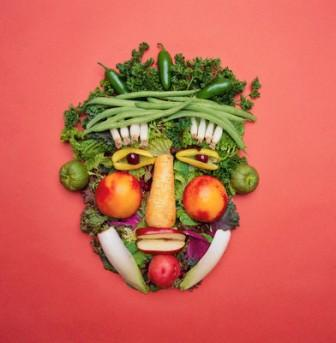
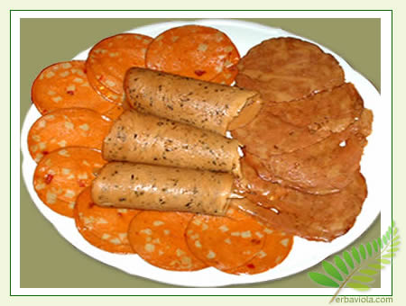

Vegetariani e vegani

|  | Pagina 3
|
| Il vegetarianismo (detto anche vegetarismo) è un regime alimentare che prevede l'utilizzo di vegetali (cereali, legumi, frutta e verdura) e l'esclusione di carne (carne rossa, pollame, pesce), con inclusione di latticini e uova (se assenti si parla di veganismo). Alcune diete vegetariane escludono anche l'uso di sottoprodotti animali, come caglio e gelatina di origine animale. |
|  | Pagina 2
|
| Il termine veganismo (più raramente detto vegetalianismo) indica una dieta e uno stile di vita che esclude l'uso di prodotti di origine animale come cibo e per qualsiasi altro scopo.[1] Le persone che scelgono questo stile di vita (denominate vegane o, con prestito dalla lingua inglese, vegans) non mangiano carne e pesce, evitano di consumare latte, latticini, uova e derivati e si rifiutano di acquistare o usare prodotti di qualsiasi genere la cui realizzazione implichi lo sfruttamento diretto di animali. Le principali motivazioni che spingono a questa filosofia di vita sono l'impegno a favore della causa dei diritti animali e motivazioni etiche correlate come l'antispecismo, ma sono anche frequentemente citate ragioni di ordine politico, ambientalista, spirituale e religioso |
| Pagina Creata da Luis Pardo |